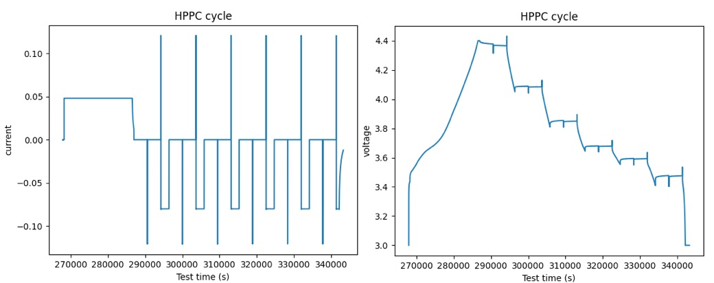

Advanced Structuring: Diagnostic and Custom Cyles¶
It is often necessary in cycling experiments to run cycles with more than standard aging charging or discharging steps. These may include reference performance testing (RPT), hybrid pulse power characterization (HPPC), or other custom series of steps. We refer to these as "diagnostic cycles".
BEEP's core BEEPDatapath object contains logic for interpolating these cycles in a
reproducible way, but you must specify where in the cycler file the diagnostic cycles are. If the locations
of the diagnostic cycles are not specified, BEEPDatapath will treat these cycles as regular aging cycles.

How to structure diagnostic cycles in BEEP¶
The series of steps for structuring diagnostic cycles is:
- Define a
DiagnosticConfig; this is an object specifying where diagnostic cycles are located. - Set the
DiagnosticConfigobject as thediagnosticattribute of aBEEPDatapathobject. - Structure using either
BEEPDatapath.stucture(...)orBEEPDatapath.interpolate_diagnostic_cycles(...)(for more granularity.)
1. (a) Defining a DiagnosticConfig from cycle indices¶
The most direct way of specifying a DiagnosticConfig is by simply passing in the locations of the cycle
indices for each type of diagnostic cycle in your file. This is done with a dictionary where the keys are
user-defined names of cycles and values are sets of cycle indices.
In this example, we'll say there are only HPPC cycles and they're located at cycle indices 1, 12, and 14.
from beep.structure.diagnostic import DiagnosticConfig
dc = DiagnosticConfig(
{
"hppc": {12, 14, 1}
}
)
For a more complex example, let's say there are several kinds of cycles at various intervals:
from beep.structure.diagnostic import DiagnosticConfig
rpt1_ix = set(range(1, 1002, 200))
rpt2_ix = set(range(2, 1003, 200))
hppc1_ix = {12, 512}
hppc2_ix = {115, 718, 910}
reset_ix = {0, 1000}
abnormal_ix = set(range(5, 520, 50))
dc = DiagnosticConfig(
{
"rpt1": rpt1_ix,
"rpt2": rpt2_ix,
"hppc1": hppc1_ix,
"hppc2": hppc2_ix,
"reset_": reset_ix,
"abnormal": abnormal_ix
},
)
Note the names of the cycles are user defined, but BEEP will determine a strategy of interpolation if the cycle names contain:
"rpt": If found in the cycle name, these cycles will be treated as RPT. E.g.,"rpt_0.2C"would be interpolated as an RPT cycle."hppc": If found in the cycle name, these cycles will be treated as HPPC."reset": If found in the cycle name, these cycles will be treated as RESET cycles.- Any other cycle name will be interpolated on a step-by-step basis on the voltage axis.
1. (b) Defining a DiagnosticConfig automatically using step numbers¶
Specifying individual step numbers can be difficult, especially if you are working with someone else's file.
However, DiagnosticConfig can also be instantiated with a set of heuristics for recognizing
step numbers present in certain cycles but missing in others. For example, if HPPC cycles always contain
the step indices 14 and 16 and other cycles never do, we can automatically determine the cycle indices
of the HPPC cycles.
We use the DiagnosticConfig.from_step_numbers method to instantiate the object automatically.
The matching_critera argument determines a set of "contains" or "exact" matching rules for each diagnostic cycle type.
We will also need the dataframe of raw data.
For example, let's say:
- Our HPPC cycles always at least contain step numbers 1,2,4,6,8.
- Our low-rate RPT cycles are EXACTLY (only) step numbers 12 and 13.
- Our high-rate RPT cycles are EXACTLY (only) step numbers 15 and 16.
We can recognize the cycles automatically:
from beep.structure.maccor import MaccorDatapath
from beep.structure.diagnostic import DiagnosticConfig
datapath = MaccorDatapath.from_file("MyMaccorFile.rar")
dc = DiagnosticConfig.from_step_numbers(
datapath.raw_data,
matching_criteria={
"hppc": ("contains", [(1, 2, 4, 6, 8)]),
"rpt_lowrate": ("exact", [(12, 13)]),
"rpt_highrate": ("exact", [(15, 16)])
}
)
1. (c) Working with DiagnosticConfig¶
Once instantiated, DiagnosticConfig objects have some attributes for working
with the cycle indices of each diagnostic cycle type.
DiagnosticConfig.all_ixgives the set of all diagnostic cycles, regardless of their type (as long as they are not regular aging cycles)DiagnosticConfig.rpt_ixgives the set of all RPT cycles, even those specified at different C-rates. For more info on how RPT cycles are recognized, see Step 1(a) above.DiagnosticConfig.hppc_ixgives the set of all HPPC cycles, even those with different parameters.DiagnosticConfig.cyclesgives a mapping from a cycle type string (e.g.,"rpt_lowrate") to the set of it's cycle indices (e.g.,{1, 101, 201, ...})DiagnosticConfig.type_by_ixgives a mapping from cycle index (e.g.,101) to the cycle type string (e.g.,"rpt_lowrate")
Here is an example:
from beep.structure.diagnostic import DiagnosticConfig
rpt1_ix = set(range(1, 1002, 200))
rpt2_ix = set(range(2, 1003, 200))
hppc1_ix = {12, 512}
hppc2_ix = {115, 718, 910}
reset_ix = {0, 1000}
abnormal_ix = set(range(5, 520, 50))
dc = DiagnosticConfig(
{
"rpt1": rpt1_ix,
"rpt2": rpt2_ix,
"hppc1": hppc1_ix,
"hppc2": hppc2_ix,
"reset_": reset_ix,
"abnormal": abnormal_ix
},
)
print("All diagnostic indices:", dc.all_ix)
print("All RPT indices:", dc.rpt_ix)
print("All HPPC indices:", dc.hppc_ix)
print("RPT1 indices:", dc.cycles["rpt_lowrate"])
print("Cycle type of cycle 12:", dc.type_by_ix[12])
All diagnostic indices: {0, 1, 2, 5, 12, 55...}
All RPT indices: {1, 2, 201, 202, 401, 402...}
All HPPC indices: {12, 115, 512, 718, 910}
RPT lowrate indices: {1, 201, 401, 601,...}
Cycle type of cycle 12: hppc1
2. Set the DiagnosticConfig object to BEEPDatapath.diagnostic¶
Once DiagnosticConfig is instantiated alongside a datapath,
set the diagnostic attribute of a BEEPDatapath to that object.
3. Interpolate!¶
You can now structure files normally using BEEPDatapath.structure(...) (for a full structuring of both diagnostic and normal cycles) or
BEEPDatapath.interpolate_diagnostic_cycles(...) (for diagnostic cycles only).
Here is a full example: